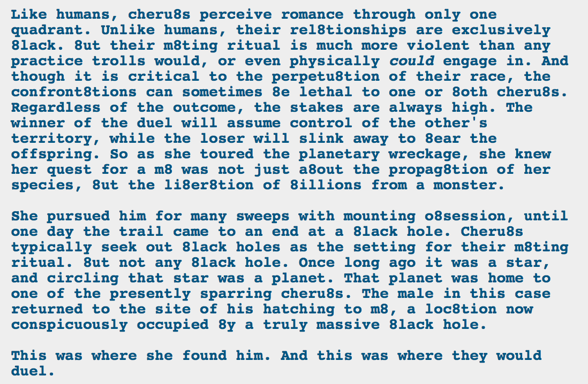

[Insert quasi-feminist rant about pregnancy being used to denote the weaker partner and impregnation being a form of dominance even when they are divorced from gender]
This sounds a lot like where Calliope/Caliborn lived. Planet circling a star, which later…well, the star didn’t become a black hole, it got sucked into one created by the kernelsprite, but close enough, right?
If these are Calx2’s parents, I’m guessing that the male here didn’t end up entering the game or anything, so it’s a normal black hole and not the result of a dead session. I could be wrong, though. Maybe dead sessions happen for cherubs.